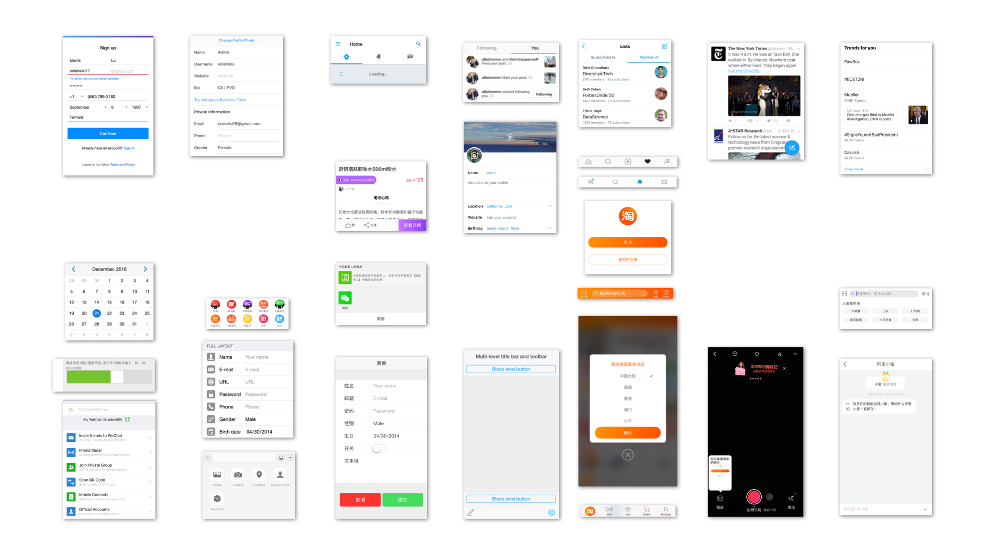
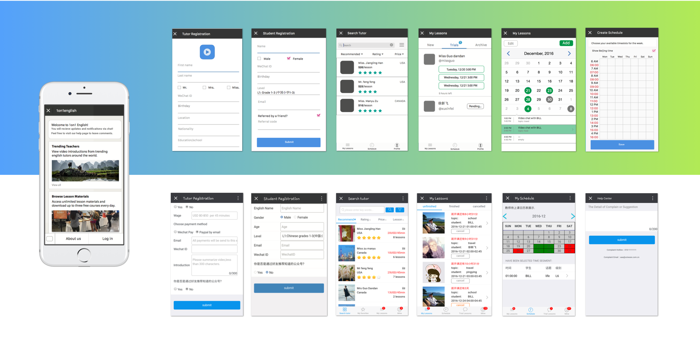
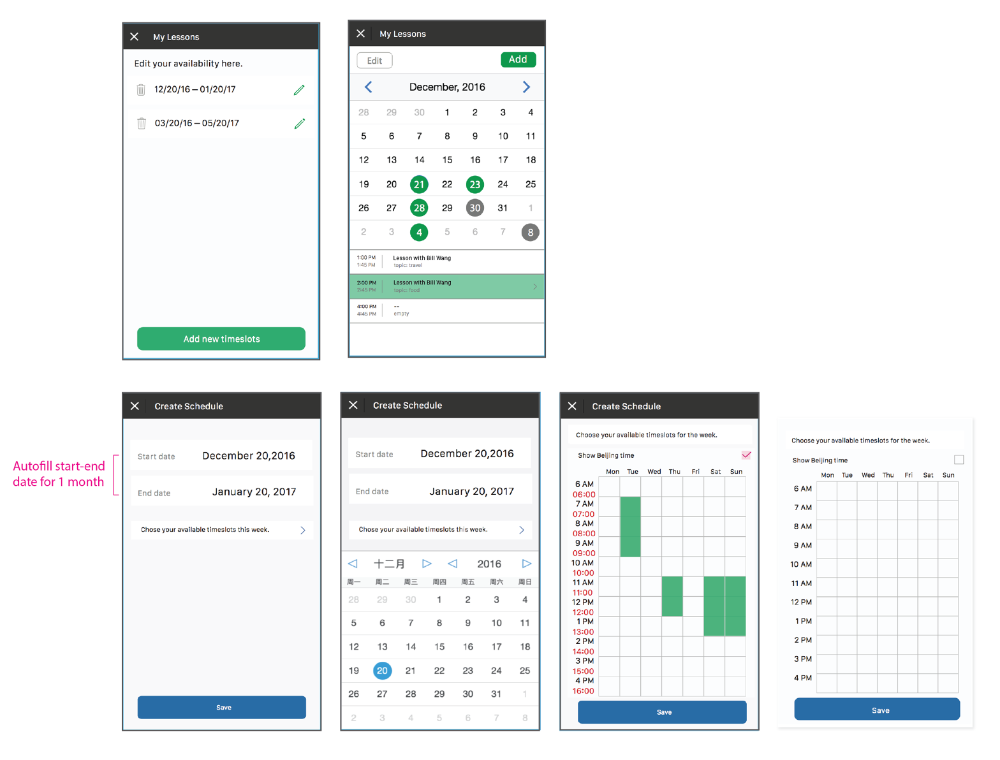
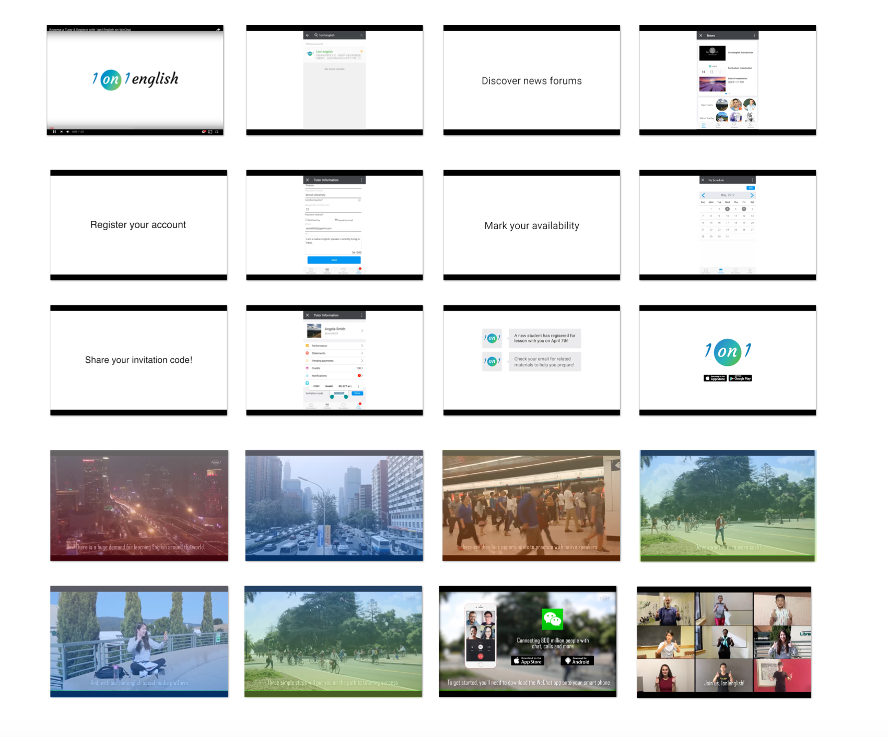

WeChat Extension
Contract Designer, Winter 2016/2017
1on1English is a WeChat page that connects and schedules chat sessions between Chinese students to native English tutors.
I spent my holidays in Beijing, which means I was living off WeChat. During my time with the Product team at Uniware HQ, I worked with engineers and PMs on cleaning up 1on1english's current registration flow and researched a design spec for a future release of a UI framework.
Designing for English Tutors
The goal of creating a product like this one is to put tools in the hands of teachers and students who will create their own value propositions based on it. Registered users can find each other to start conversations, manage personal payments, and schedule sessions that work for both parties, while using 1on1english as their main platform for connecting with people, managing statements, facilitating video chat sessions, and browsing content.
How can we better facilitate the scheduling experience between students and teachers living in different time zones?
Between weekly project syncs and mini presentations in both English and Chinese, I was able to investigate UI patterns across native Chinese applications and incorporate such patterns in iterations. We mainly critiqued the WeChat and Taobao mobile apps, looking at microinteractions, usage and navigation patterns. The main screens we audited for critique are shown below.

Surfacing Activity
While I familiarized myself with the product, I documented my initial impressions, reactions to the user experience and questions. I also documented existing design conventions and patterns across the product for future improvements, by comparing ways people engage with popular task management and communications apps. To test our intital hypotheses, we spend one week testing flows among those who use chinese apps regularly, those who use North American apps regularly, and those who are familiar with both.
We audited a apps with features most similar to the ones we were looking to incorporate with 1on1english, and moved forward to test with a selection of them. This included UX flows such as social media sign in, profile settings, registration, payment portals, and browsing. Here are a range of UI components that performed best in terms of usability across the tests.

Testing
We conducted tutor interviews, interviewed students and experimented with test tutoring sessions and trial lessons. We wrote and edited lesson plans. We held in-office forums and mock video chat sessions between an english tutor and student. We shared prototypes, observed lessons, recorded video chat sessions, and listened to their interactions. We also analyzed how people in the US interact with the WeChat app and how people in China interact with the same WeChat app.
Between testing, and participating in tutoring sessions, the problem became more clear. We need to minimize on undesired missed lesson opportunities between different time zones, while allowing both parties some degree of scheduling choice.
Syncronizing people's schedules is routinely a challenge. In our case, student and tutors aren't directly communicating with each other before the student requests a tutor. Instead, requesting tutors through 1on1english felt very transactional. As a result, if we give tutors the ability to schedule timeslots, the time may not work with the student's schedule given the time difference. Alternitavely, if we give students the ability to chose from the tutor's public calendar, tutors that do not check their WeChat apps as often miss notifications and tutoring sessions.

Solution: Flexible Schedules
Our solution was to construct a series of notification prompts that search for matching timeslots where students and teachers are both available. These time are sent to both the student and teacher as "recommended times." The tutor receives the recommended times first, then sends them to the student to make a final selection. After a seleciton is made, the lesson will be added to both their schedules. Lesson materials and documents are also sent via email, and both parties will receive each other's WeChat contact information for further communications.
Students can now schedule new lessons from their calendars. And tutors can add new availabities on their calendar. The hours where both students and tutors are available can be seen by students. All booked lessons will then be automatically added to your calendar. Reminder notifications will be sent accordingly. This eliminates a previous task screen where "scheduling lessons" and "calendar" tasks were separate and underutilized in engaging actionable results early on.

Promotion Videos
During my free time, I storyboarded and helped record video clips for a promo video with the new UI and flow that we designed. The video walks you through the initial registration process and teaches people how to navigate their WeChat official accounts page.